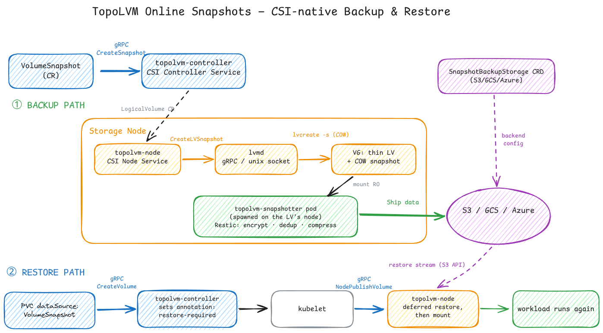

TopoLVM: Off-Cluster Snapshot Backup & Restore
TopoLVM is a CSI driver for Kubernetes that brings native Linux LVM straight into your cluster. No replication layer, no network hop: volumes are carved from the node's local disks, so you get near bare-metal I/O latency. That's exactly why it's a favorite for databases on Kubernetes — PostgreSQL, MySQL, Kafka, ClickHouse, Elasticsearch.
The node-local trade-offs
That design comes with real costs:
- No replication → no built-in high availability
- A volume can't outgrow a single node's capacity
- If the node dies, the volume dies with it
- And the one that bothered me most: no backup to remote storage, no restore — nothing like what Longhorn offers out of the box
For the storage layer that's already the performance king, that last gap makes the node-failure story fatal: your snapshots are sitting on the same disk that just died.
What I built
At AppsCode, I built native off-cluster backup & restore for TopoLVM snapshots, riding the standard CSI machinery end to end:

- A
VolumeSnapshotcreates an instant LVM thin COW snapshot while the workload keeps running. - A snapshotter pod is spawned automatically on the node that owns the volume and mounts the snapshot read-only.
- Data ships to S3, GCS, or Azure — with encryption, deduplication, and compression via Restic. The backend is declared once in a
SnapshotBackupStorageCRD. - Restore rides the normal CSI workflow: a PVC with a
VolumeSnapshotdataSource gets arestore-requiredannotation from the controller, and the node service performs a deferred restore — data streams back from object storage on the first mount, then the workload starts.
Result: after a node failure, workloads are restored onto any healthy node instead of losing data.
What this project taught me
- CSI driver internals — how a PVC request travels through gRPC calls from the controller service to
lvmdon the node - Linux LVM thin-pool and copy-on-write snapshot internals
- Deferred-restore semantics inside the CSI volume lifecycle
- The ugly edge cases: a PVC deleted mid-backup, the executor pod killed externally, a missing storage backend
- Building encryption, deduplication, and compression into a storage data path
- A monitoring dashboard for cluster-wide CSI health and metrics
Everything is public — try it: cloudnativestorage/topolvm/example.